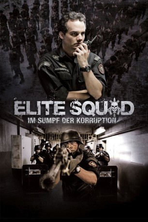

#1153 Elite Squad: Im Sumpf der Korruption
Alternativ: Elite Squad: The Enemy Within (Englischer Titel)
 
 IMDB-Wertung: 8.1 / 10
IMDB-Wertung: 8.1 / 10  Metascore: 71
Metascore: 71 
Zehn Jahre ist es her, dass Capitão Nascimento ein Einsatzkommando der BOPE, DIE Elitetruppe der brasilianischen Militärpolizei, anführte, um für den damals anstehend Papst-Besuch zumindest zeitweilig für etwas Ruhe und Ordnung zu sorgen. Inzwischen leitet Nascimento die BOPE und kann bereits auf einige Erfolge im Kampf gegen die Drogenmafia zurückblicken. Während die Kriminellen der Stadt jedoch meist ein klares Ziel abgeben, muss Nascimento mehr und mehr auch gegen einen neuen Feind kämpfen, einen Feind aus den eigenen Reihen: Korrupte Polizisten und Politiker versuchen die Machtspiele der unterschiedlichen kriminellen Gruppierungen für ihre eigenen Zwecke zu nutzen und gehen dabei bis zum Äußersten.
Jahr: 2010
Dauer: 115 Minuten
FSK: 16
Land: Brasilien Studio: Square One EntertainmentTonspuren:
Untertitel: Deutsch,
Auflösung: 1080p (1920x1040) Größe: 10240 MB
Genre: Action, Krimi, Drama, Thriller
Regisseur: José Padilha
Drehbuch: Bráulio Mantovani, Bráulio Mantovani, José Padilha, José Padilha, Rodrigo Pimentel
Soundtrack: Pedro Bromfman
Darsteller:
 Wagner Moura als Lt. Colonel Nascimento
Wagner Moura als Lt. Colonel Nascimento- Irandhir Santos als Diogo Fraga
- André Ramiro als Captain André Matias
- Milhem Cortaz als Lieutenant-Colonel Fábio
- Seu Jorge als Beirada
- André Mattos als Fortunato
- Luca Bianchi als Rapé
- Maria Ribeiro als Rosane
- Sandro Rocha als Major Rocha aka Russo
- Tainá Müller als Clara
- Pedro Van-Held als Rafael
- Adriano Garib als Guaracy
- Julio Adrião als Governador Gelino
- Emílio Orciollo Netto als Valmir
- Rodrigo Candelot als Formoso
- Charles Fricks als Vermont
- Fabrício Boliveira als Marreco
- Marcello Gonçalves als Gonçalves
- Pierre Santos als Santos
- William Vita als Aranha
- André Santinho als Major Renan
- Guilherme Belém als Tatuí
- Ricardo Sodré als Bocão
- Marcelo Cavalcanti als Sargento Gonçalo
- Bruno d'Elia als Capitão Azevedo
- Cássio Nascimento als Moraes
- Francisco Salgado als Pestana
- Gabriel Teixeira als Ari
- Zé Mário Farias als Felpa
- Cadu Fávero als Monitorador Desipe
- Vítor Fraga als Agente Desipe 1
- Johayne Hildefonso als Agente Desipe 2
- Willian J. Shakespeare als Paulinho
- Jovem Cerebral als Braço
- Chico Melo als Qualé
- Deiwis Jamaica als Preso
- Ricardo Pavão als Valcir Cunha
- Juliana Schalch als Júlia
- Rogério Trindade als Delegado Barata
- Paulo Giardini als Camelo
- Luciano Vidigal als Alexandre
- Prazeres Barbosa als Dona Olga
- Alexandre Ackerman als Delegado Viana
- Marcos 'Kikito' Junqueira als Marcinho
- Roney Villela als Pereira
- Alexandre Liuzzi als Álvaro
- Rose Abdallah als Escrivã
- Marco Túlio Fernandes Filho als Rafael 10 anos
- Paulo Hamilton als Soldado Paulo
- Thogun als Cabo Tião
Datei: X:\2-Dilogie(A-F)\Elite Squad\Elite Squad Im Sumpf der Korruption (2010, FSK16, 1920x1040).mkv seit 29.05.2015
Festplatte: HD Collection-2(A-Z)-3(A-M)
 Alle Filme aus Gruppe '2-Dilogie(A-F)\Elite Squad'
Alle Filme aus Gruppe '2-Dilogie(A-F)\Elite Squad'
- Elite Squad
- Elite Squad: Im Sumpf der Korruption (der aktuelle Film)